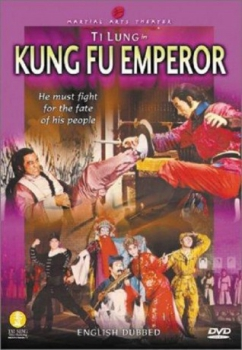

Also known as:功夫皇 (original title)
Country:ZH, 92 minutes
Spoken languages:
Genres:Action
Director(s):Pao Hsueh-Li
Writer(s):
Video Codec:Unknown
Number: 1984

Certification:
Storyline:
Don't expect a long life if you are one of the emperor's fourteen sons! For instance, Ninth Prince meets an "accident" while hunting. The (unnamed) Manchu emperor is old and ill, and speculation about his successor is rife. But the powerful Lord Long, who is not a son of the emp, wants the throne as well. To stay alive, Fourth Prince keeps secret his kung fu lessons and plays the fool. Fourth Prince then leaves palace life to live among the poor. He befriends a ragged band on commoners and, eventually, returns to the palace to prevent Lord Long's rise to the throne after the last prince is killed.
Cast:


Medium: Original DVD,
Loaned: No
Aspect ratio: Unknown